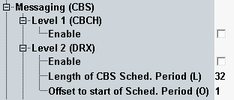

Level Settings
This section configures parameters of the "Messaging (CBS)", level 1 and level 2.

CBS - level parameters
Enables CBS generally.
Remote command:A scheduling message informs the MS which CB messages will be sent in the next DRX schedule period. The MS reads then the CB message of interest in DRX mode. The following parameters configure DRX for CBS scheduling.
Enables discontinuous reception (DRX) for the CBS scheduling.
Remote command:Specifies the length of the DRX used for the specific CB message. Define value matching with the position of the particular CB message within the CBS scheduling period.
Remote command: